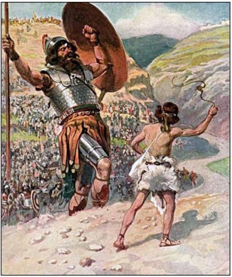

1000 BCE With the murder of Ishbosheth, the path is finally clear for David and his Judean priest Zadok to take over. The elders of Israel come to David and anoint him. David conquers Jerusalem, up to that time a very modest settlement whose name means “founded by Shalem (a Canaanite god)”, and brings the ark of the covenant to Jerusalem (to the resentment of the ten Northern tribes). Nathan pronounces YHWH’s blessing on David’s kingship and promises his dynasty will last forever (2Sam7). David executes Saul’s descendants (2Sam21) and empowers the High Priest Zadok and Levites from Bethlehem, loyal to David, who are scattered throughout the kingdom, a priesthood, not unlike the Jesuits, fiercely loyal to their king. David fights frontier wars with the Philistines, Moabites, Edomites, Ammonites, and Aramaeans. "Zion theology," the idea that the god of Israel has chosen Jerusalem for his dwelling-place and that the Davidic dynasty will reign there forever, becomes the state ideology. The House of David rules Jerusalem for four hundred years to 586 BCE. G2K makes an obvious effort to present David in a favorable light, as YHWH’s Chosen One. “House of David” appears in the Tell Dan inscription.

David as the Psalmist? - ledawid, the term based on which the Psalms are attribute to David, likely means not “by David,” but rather dedicated “to David.” David is portrayed chiefly as a musician in Chronicles, though G2K has little on this aspect. The later the version of the story, the more psalms are ascribed to David.
~~~~~~~~